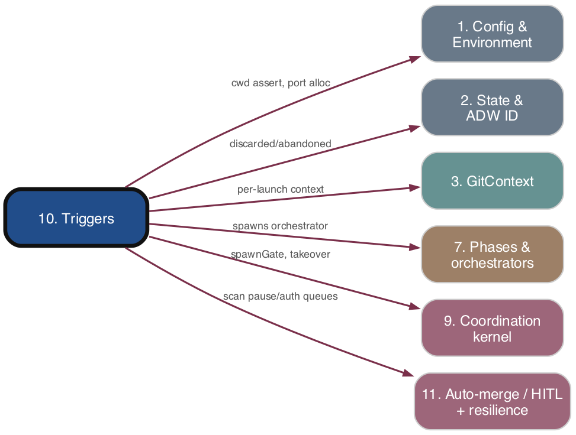

Triggers
As-is reference. Ground truth: source code.

Purpose
The two automation entry points that turn external GitHub activity into spawned ADW orchestrator processes. The cron trigger (trigger_cron.ts) is a periodic backlog sweeper that polls open issues/PRs and recovers stalled work; the webhook trigger (trigger_webhook.ts) is a real-time HTTP gatekeeper that reacts to GitHub webhook events. Both resolve issue eligibility, run the takeover decision, and dispatch detached orchestrator child processes; neither owns the coordination primitives themselves (09. Coordination kernel">subsystem 9) — they call them.
Responsibilities
- Cron polling loop (
POLL_INTERVAL_MS = 20s, PR poll60s): fetch open issues viagh issue list, filter for eligibility, sort oldest-first, dispatch. - Webhook HTTP server:
POST /webhook(event dispatch) andGET /health(health checks); routesissues,issue_comment,pull_request,pull_request_review,pull_request_review_commentevents. - HMAC-SHA256 signature validation of raw webhook bodies (constant-time compare).
- Issue eligibility/action resolution: dependency + concurrency checks, grace period, stage classification (
spawnvsmerge), region-overlap serialization, label-recovery routing,## Cancel/## Retrydirective handling. - Takeover dispatch: call
evaluateCandidatebefore every standard spawn; act onspawn_fresh/take_over_adwId/defer_live_holder/skip_terminal/escalate_human_gated. - Spawn dispatch: detached
bunx tsx adws/<orchestrator>.tsxchildren, cwd-pinned toREPO_ROOT. - Per-cycle maintenance wired into the cron loop: hung-orchestrator sweep, pause-queue scan, auth-queue scan, dev-server janitor, per-issue scenario sweep, auth-gate tick.
- Cloudflare tunnel lifecycle (
cloudflareTunnel.tsx): create/reuse tunnel, route DNS, runcloudflared, forward SIGINT/SIGTERM. - Shutdown (
trigger_shutdown.ts): SIGTERM all cron PID-file processes and webhook server processes.
Key Files
| Path | Role |
|---|---|
| --- | --- |
adws/triggers/trigger_cron.ts |
Cron backlog sweeper; poll loop, candidate dispatch, maintenance sweeps, hung-detector. |
| --- | --- |
adws/triggers/trigger_webhook.ts |
HTTP webhook server; event routing, signature check, spawn dispatch. |
| --- | --- |
adws/triggers/cronIssueFilter.ts |
Pure evaluateIssue / filterEligibleIssues: stage→action resolution, grace period, dedup, region-overlap pass. |
| --- | --- |
adws/triggers/webhookHandlers.ts |
handlePullRequestEvent (PR-closed → discarded + close issue), handleIssueClosedEvent (worktree/branch cleanup, dependency unblock). |
| --- | --- |
adws/triggers/webhookSignature.ts |
validateWebhookSignature — HMAC-SHA256 constant-time check. |
| --- | --- |
adws/triggers/webhookGatekeeper.ts |
classifyAndSpawnWorkflow, spawnDetached, ensureCronProcess, closeAbandonedDependents, dependency unblock. |
| --- | --- |
adws/triggers/issueOpenedRouter.ts |
issues.opened label routing (opt-out / conflict / classified / infer). |
| --- | --- |
adws/triggers/issueEligibility.ts |
checkIssueEligibility — open-dependencies + concurrency-limit gate. |
| --- | --- |
adws/triggers/cronProcessGuard.ts |
PID-file single-cron-per-repo guard (registerAndGuard, isCronAliveForRepo). |
| --- | --- |
adws/triggers/cronStageResolver.ts |
Resolves workflow stage / adwId / last-activity from issue comments + state. |
| --- | --- |
adws/triggers/cronRepoResolver.ts / webhookRepoResolver.ts |
Resolve RepoInfo + --target-repo args from CLI argv / webhook payload. |
| --- | --- |
adws/triggers/cronLabelEligibility.ts |
Label-recovery eligibility for fresh issues with adw:<type> labels. |
| --- | --- |
adws/triggers/cloudflareTunnel.tsx |
Cloudflare tunnel create/route/run lifecycle for exposing the webhook server. |
| --- | --- |
adws/triggers/trigger_shutdown.ts |
Terminates all cron + webhook trigger processes. |
| --- | --- |
adws/triggers/scanAuthQueue.ts |
Resumes auth-paused workflows once login is restored (called per cron cycle). |
Behavior & Flows
Cron cycle (checkAndTrigger): increment cycleCount; if the auth gate is set, run handleAuthGateTick (SIGTERM live orchestrators → paused_auth, or clear gate + scanAuthQueue on re-login) and return early. Otherwise run scanPauseQueue, scanAuthQueue, and modulo-gated runHungDetectorSweep / runJanitorPass / runPerIssueScenarioSweep. Fetch open issues; scan latest comments for ## Cancel (→ handleCancelDirective) and ## Retry (→ handleRetryDirective). Call filterEligibleIssues → eligible candidates (action: 'spawn'|'merge', optional adwId) + overlap deferrals. For each candidate: merge → shouldDispatchMerge gate then spawn adwMerge.tsx; spawn → checkIssueEligibility, then evaluateCandidate (takeover), branching on its kind to spawn adwSdlc.tsx (fresh or takeover adwId) via classifyAndSpawnWorkflow / spawnDetached. AuthRequiredError thrown during spawn → writeAuthGate and abort the cycle.
Cron PR loop (checkPRsForReviewComments): poll open PRs, spawn adwPrReview.tsx for any with unaddressed review comments (in-memory processedPRs dedup).
Cron startup guard: only runs as entry script (argv check); assertCwdIsRepoRoot, registerAndGuard(repoKey, pid) — exits if another cron already owns the repo.
Webhook request flow: read raw body → if GITHUB_WEBHOOK_SECRET set, validateWebhookSignature (401 on mismatch) → JSON parse (400 on failure) → resolveWebhookRepo (build per-event immutable GitContext, ensureCronProcess). Dispatch by x-github-event:
- pull_request_review_comment / pull_request_review: cooldown-gated (PR_REVIEW_COOLDOWN_MS = 60s), spawn adwPrReview.tsx (approved reviews ignored; merge is cron's job).
- issue_comment: ## Cancel/## Retry directives, else isActionableComment → cooldown + isAdwRunningForIssue + checkIssueEligibility → classifyAndSpawnWorkflow.
- pull_request closed: handlePullRequestEvent (merged → ignore; closed-without-merge → write discarded, close linked issue).
- issues closed: handleIssueClosedEvent (worktree removal, remote-branch delete, abandoned/discarded → closeAbandonedDependents, else dependency unblock).
- issues opened: routeIssueOpened (opt-out / multi-label conflict refusal / classified / infer-and-persist-label).
- Most issue/PR paths short-circuit to 200 {status:'ignored', reason:'auth_gate_set'} while the auth gate is set.
Spawn dispatch: spawnDetached / direct spawn with detached:true, stdio:'ignore'|'inherit', cwd: REPO_ROOT, child.unref(). Relative adws/*.tsx args are resolved against REPO_ROOT.
Signature validation: requires sha256= prefix, recomputes HMAC over raw body, length check then timingSafeEqual.
Cloudflare tunnel (separate process): parseArgs (--name/--hostname/--port/--skip-create), check cloudflared installed, create/reuse tunnel, route dns, spawn('cloudflared', ['tunnel','run',...]), propagate exit code and signals.
Data Structures
RawIssue(cron) /CronIssue(filter): number, title, body, comments, createdAt, updatedAt, labels.FilterResult/EligibleIssue:{ eligible, reason?, action?: 'spawn'|'merge', adwId? }.ProcessedSets:{ spawns: ReadonlySet<number> }— fresh-spawn boot-window dedup (gates onlystage === null).OverlapDeferral:{ issueNumber, blockedBy, overlapPaths }.EligibilityResult:{ eligible, reason?: 'open_dependencies'|'concurrency_limit', blockingIssues? }.CandidateDecision(consumed):spawn_fresh | take_over_adwId | defer_live_holder | skip_terminal | escalate_human_gated.SignatureValidationResult:{ valid, error? }.IssueOpenedRoute/IssueOpenedOutcome;PrClosedDeps/IssueClosedDeps(injectable webhook-handler deps).CronPidRecord/IssueSpawnLockRecord(on-disk JSON underagents/cron/andagents/spawn_locks/).- In-memory module state:
processedSpawns,processedPRs,cycleCount,recentPrReviewTriggers,recentIssueTriggers,cronSpawnedForRepo.
Public Interface
- Cron:
runHungDetectorSweep(now, deps?)(exported for tests); module side-effects gated by entry-script argv check. - Webhook: HTTP
POST /webhook,GET /health; re-exportshandlePullRequestEvent,handleIssueClosedEvent,extractIssueNumberFromBranch,classifyAndSpawnWorkflow,ensureCronProcess,shouldTriggerIssueWorkflow. - Filter:
evaluateIssue(...),filterEligibleIssues(...),resolveTouchedFilesFromBody(issue)(all pure, injectable resolvers). - Gatekeeper:
classifyAndSpawnWorkflow(...),spawnDetached(command, args),ensureCronProcess(...),closeAbandonedDependents(...),handleIssueClosedDependencyUnblock(...),logDeferral(...). - Signature:
validateWebhookSignature(rawBody, secret, signatureHeader). - Router:
decideIssueOpenedRoute(reading),extractPayloadLabelNames(issue),routeIssueOpened(params, deps?). - Eligibility:
checkIssueEligibility(issueNumber, issueBody, repoInfo). - Process guard:
registerAndGuard(repoKey, ownPid),isCronAliveForRepo(repoKey),writeCronPid.
Dependencies
- Upstream (depends on):
- Config & Environment:
REPO_ROOT,LOGS_DIR,AGENTS_STATE_DIR,GRACE_PERIOD_MS, interval/threshold constants, port helpers,resolveClaudeCodePath,assertCwdIsRepoRoot,.envload. - GitContext:
buildLaunchGitContext, per-eventGitContext,gitContextForSync(worktree/branch ops). - GitHub layer:
gh issue/pr list,getRepoInfo,fetchPRList,fetchIssueCommentsRest,closeIssue,commentOnIssue,isAdwRunningForIssue,activateGitHubAppAuth,refreshTokenIfNeeded, label manager,issueClassifier. - Coordination kernel (09. Coordination kernel">subsystem 9):
evaluateCandidate/CandidateDecision,spawnGate(acquire/release/read lock),processLiveness,hungOrchestratorDetector,remoteReconcile,resumePolicy,cronStageResolver,cronProcessGuard. - Resilience/maintenance:
scanPauseQueue,scanAuthQueue,authGate,slackNotifier,devServerJanitor,perIssueScenarioSweep, region-overlap modules,mergeDispatchGate,cancelHandler,retryHandler. - State & ADW ID:
AgentStateManager.read/writeTopLevelState,generateAdwId. - Downstream (depended on by):
- Phases & orchestrators: spawned detached processes (
adwSdlc,adwMerge,adwPrReview,adwUpgrade). - Operators / external GitHub: the HTTP/cron surface that drives the whole pipeline.
Interactions
| Other subsystem | Direction | What is exchanged |
|---|---|---|
| --- | --- | --- |
| 9. Coordination kernel | calls → | evaluateCandidate, acquire/releaseIssueSpawnLock, processLiveness.isProcessLive, findHungOrchestrators, cronStageResolver, cronProcessGuard.registerAndGuard |
| --- | --- | --- |
| 7. Phases & orchestrators | spawns → | detached bunx tsx adws/adwSdlc/adwMerge/adwPrReview/adwUpgrade.tsx <issue> [adwId] [--target-repo …] |
| --- | --- | --- |
| 1. Config & Environment | reads ← | constants, paths, env (PORT, GITHUB_WEBHOOK_SECRET), port allocation, cwd assertion |
| --- | --- | --- |
| 3. GitContext | calls → | buildLaunchGitContext per launch/event; gitContextForSync for worktree/branch ops |
| --- | --- | --- |
| 2. State & ADW ID | reads/writes ↔ | top-level state (discarded/abandoned/paused_auth writes), generateAdwId |
| --- | --- | --- |
| 11. Auto-merge / HITL + resilience queues | calls → | scanPauseQueue, scanAuthQueue, mergeDispatchGate, cancelHandler, retryHandler, region-overlap deferral |
| --- | --- | --- |
| 13. Cost telemetry / Slack | calls → | sendSlackDetectionNotification / sendSlackRecoveryNotification on auth-gate transitions |
| --- | --- | --- |
| 14. Docs / 15. Screenshots | none (indirect) | only via spawned orchestrators |
| --- | --- | --- |
| 16. Supply-chain | none direct | — |
| --- | --- | --- |
| External (GitHub / cloudflared) | bidirectional | webhook HTTP in, gh/ps shell out, Cloudflare tunnel |
PRD Divergences
The implementation has advanced beyond orchestrator-coordination-resilience.md:
- PRD's takeoverHandler decision set was {spawn_fresh, take_over_adwId, defer_live_holder, skip_terminal}; the code adds escalate_human_gated (resume-cap escalation, #639) and skip_terminal carries paused/paused_auth terminal stages. cronIssueFilter handles additional stages not in the PRD: merge_blocked, human_gated, phase_timeout (#637).
- PRD limits cron-cycle work to the hung-orchestrator reclaim; the code wires in several more per-cycle sweeps not described in the PRD: auth-gate tick + Slack notification, scanAuthQueue, runJanitorPass (dev-server janitor), runPerIssueScenarioSweep, and a cross-issue region-overlap serialization pass.
- Webhook issues.opened routing via issueOpenedRouter (opt-out / multi-label conflict refusal / label-classified / infer-and-persist) is richer than the PRD, which only addressed branch-name and discarded reclassification.
- PRD said adwPrReview is out of scope for coordination; triggers still spawn it (cooldown/processedPRs dedup only), consistent with PRD's stated acceptance of its own dedup.
- HMAC signature validation, Cloudflare tunnel, and trigger_shutdown are pre-existing trigger concerns not covered by this PRD.
- No divergence observed in the abandoned→discarded split: webhook PR-closed writes discarded (per PRD §"webhookHandlers PR-closed path"); cron hung-sweep rewrites to abandoned.